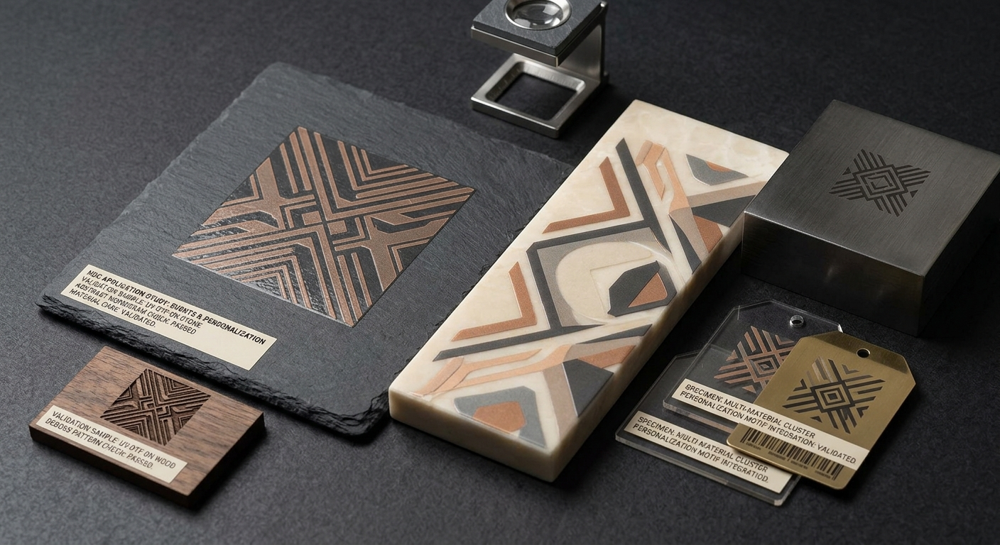
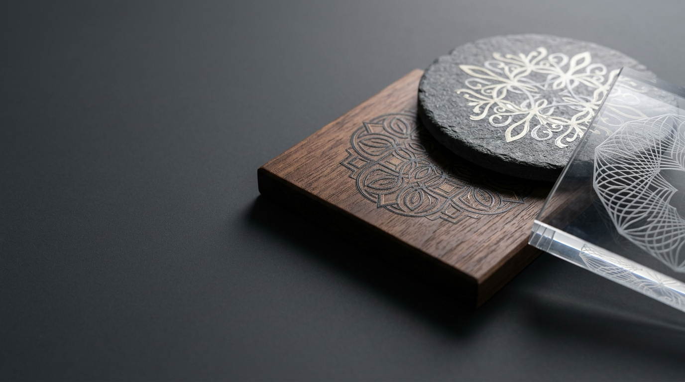
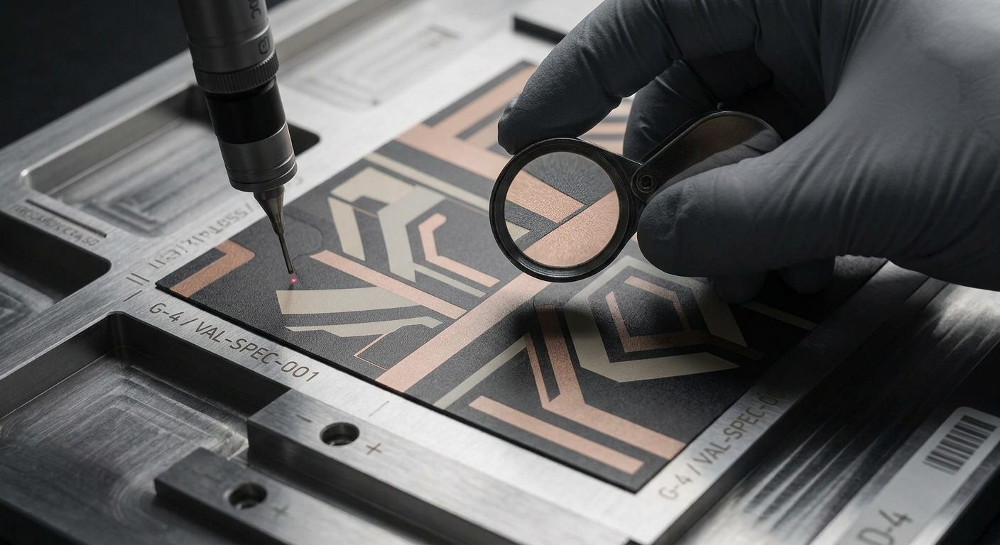
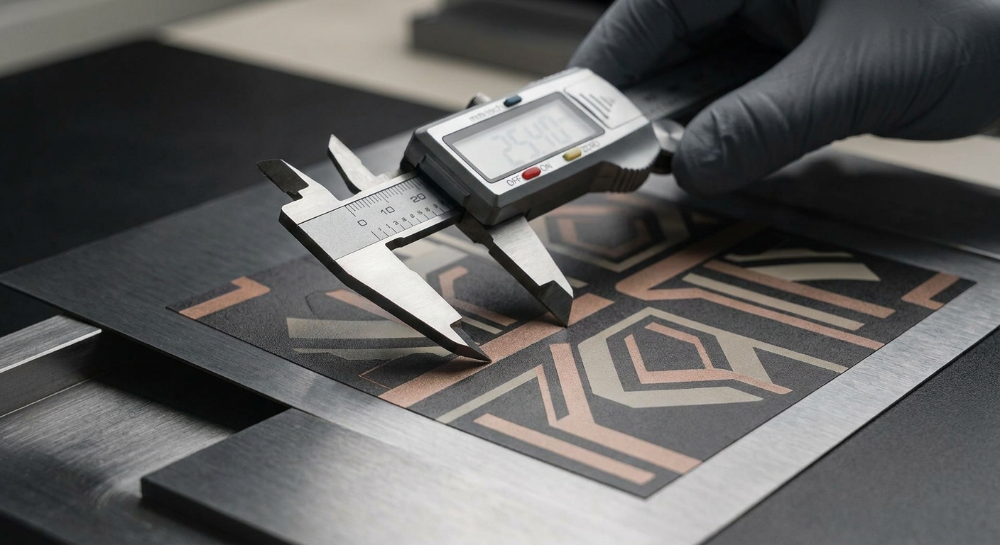

COMMERCIAL PRINT PRODUCTION / GUJRAT
Feel the print.
STICKERS, LABELS AND DECALS, object printing, packaging, commercial print and large-format brand environments shaped around the physical job.
PRINT IS A SURFACE EVENT
Detail before declaration.
HDC begins with physical evidence: the edge, colour, registration, finish and the way print responds to the intended material.
Compare production routesLabel and decal applications routed through the confirmed object, surface and finish.
↗Object printing and decorative applications reviewed against the specific surface.
↗Commercial print for packaging, stationery and branded printed matter.
↗Large-format work planned around the confirmed space, substrate and project scope.
↗PRODUCTION METHODS
Process follows the physical job.
01
Transfer Printing
Close −
UV DTF Transfer for confirmed hard surfaces and labels, alongside DTF Textile Transfer for suitable fabric applications.
Explore production route →02
Direct-to-Object UV
Close −
Direct-to-substrate UV printing onto qualified rigid media, wood panels, stone, and dimensioned blanks subject to physical review.
Explore production route →03
Offset Lithography
Close −
Sheetfed commercial print production delivering micro-registration and colour fidelity for packaging, paperboard, and stationery.
Explore production route →04
Large Format Digital
Close −
Wide-format roll-to-roll and architectural graphics printing for retail display installations, environmental branding, and signage.
Explore production route →WHERE PRINT LIVES
Surface is part of the decision.
A successful print application considers material, finish, form and intended handling before a production route is chosen.
Explore applications
COMMERCIAL USES
Surfaces become brand media.
The service architecture stays simple. The applications underneath it can be specific: labels, gifts, packaging, objects, displays and environments routed by material, scale and intended use.

CONTROL THE EDGE
Quality lives close up.
The decision becomes visible at the boundary: colour response, registration, surface and finish.



PRINT AT ARCHITECTURAL SCALE
Built for the space it needs to inhabit.
Large-format work is planned around the confirmed environment, application and production scope. Project evidence will appear here only when it is verified and approved for publication.
Explore large formatA CONTROLLED PRODUCTION PATH
Understand. Prepare. Produce.

Understand
Clarify application, quantity, artwork, surface and intended finish.
Prepare
Review artwork, production requirements and material suitability.
Produce
Use the selected print route for the defined project.
Inspect
Check visual quality, registration, application and finish.
Deliver
Prepare approved production for collection or dispatch.
THE QUALITY REGISTER
Quality is controlled.
SELECTED WORK
Real work, only.
This space is reserved for HDC-owned or publication-approved project evidence. We do not present synthetic visuals as client case studies.
See the evidence policyBRING US THE SURFACE
We’ll talk print.
Share what needs to be printed, the quantity, dimensions, material or surface and artwork status. HDC will help identify the appropriate route.
Prepare your enquiryApplication · Quantity · Dimensions · Surface/material · Artwork status · Required date
Request a quoteCall 0317 7267318Email HDC